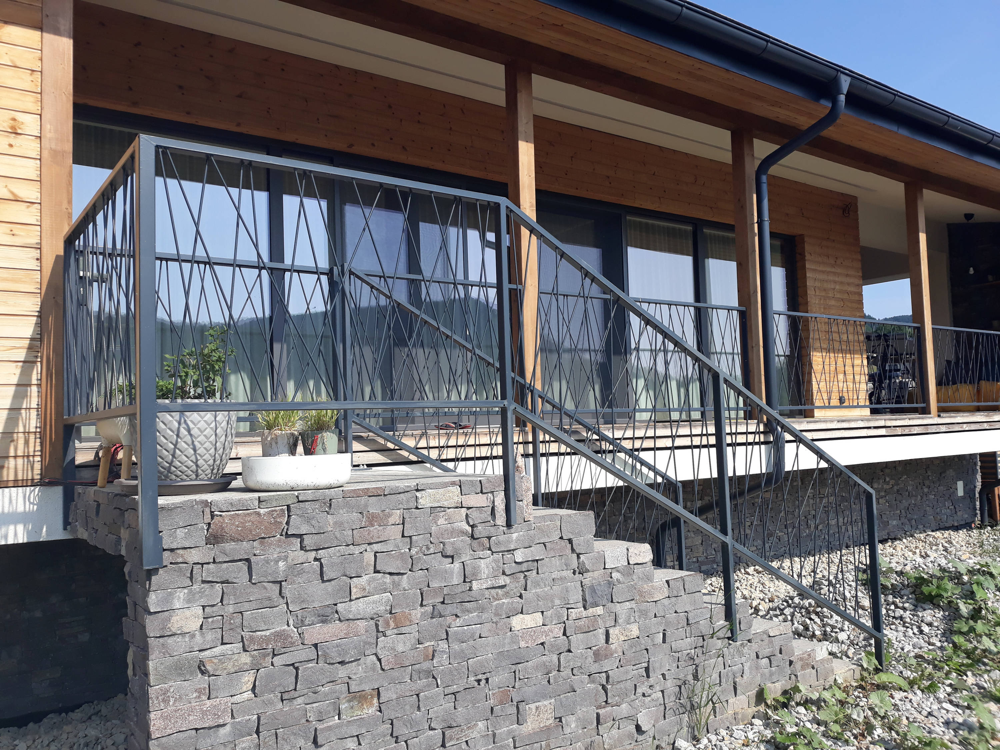
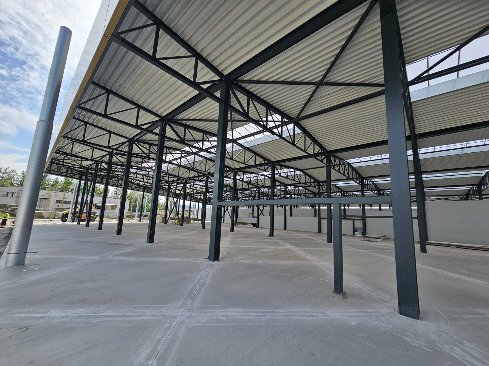
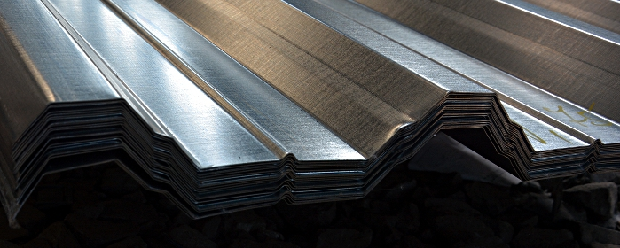

Naše služby
Oceľové konštrukcie
Zaisťujeme návrh a výrobu oceľových konštrukcií všetkých typov pre priemyselné aj nevýrobné odvetvia.

Zámočnícke výrobky
Zámočnícke výrobky tvoria významnú časť výrobného programu firmy Stavomontáže, Kovo-Sklo s.r.o.

Povrchová úprava
Zabezpečujeme komplexnú povrchovú úpravu oceľových konštrukcií pre zvýšenie odolnosti a estetiky.

Opláštenie oceľových konštrukcií
Najčastejším využitím oceľových konštrukcií v priemyselnom stavebníctve sú oceľové haly.

Klampiarske práce
Klampiarske prvky používame ako ochranný, funkčný a estetický doplnok pre opláštenie oceľových konštrukcií.

Predaj hutníckeho materiálu
Predaj hutníckeho materiálu a plechov. Ponúkame široký sortiment oceľových profilov.